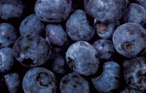

DYNAMIC GRAPHICS/JOHN FOXX IMAGES
Easy Blueberry Jam
2 quarts blueberries, rinsed and drained
3 tbsp lemon juice (optional)
2 tsp pectin powder
1/2 to 1 cup honey, or 1 cup sugar
1/2 tsp calcium powder
Cook and mash the berries, making 4 cups mashed purée. Add lemon juice if desired. Stir the pectin powder into the sweetener, mixing well. Make a calcium solution by mixing 1/2 teaspoon calcium powder with 1 cup of water. Bring fruit to a boil that cannot be stirred down. Add the sweetener, whisking it into the boiling berries. Return to a boil. Add 4 teaspoons calcium solution. Stir well. Pour into hot sterile jars. Seal and can or freeze. Makes 4 to 5 cups jam.